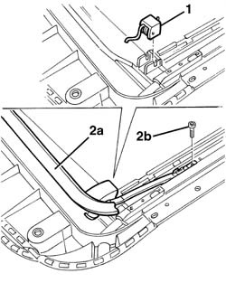

7030B42 Sun roof SPOLIER - R.R.
- Path
- Procedures > 70 FITTINGS > 7030 SUN ROOF AND HOOD > 7030B SLIDING ROOF > 7030B42 Sun roof SPOLIER - R.R.
- Kind
- repair procedure (removal / refitting; the operation number is the code)
- Applies to
- all engines; all production periods
- Interactive page
- https://sloeber94.github.io/elrnDB-lThss/en/#/80297
Applies to: all engines; all production periods
 Removing
Removing
 Refitting
Refitting- Move the sun roof as far back as necessary to gain access to the fixing bolts.
1. Undo the fixing bolt (1a), on both sides, and remove the spoiler (1b).
2. Release the spring, complete with support, and remove it.
Applies to: all engines; all production periods
Refitting
Removing1. Fit the spring, complete with support, in the housing.
2. Position the spoiler (2a) and tighten the fixing bolts (2b).
